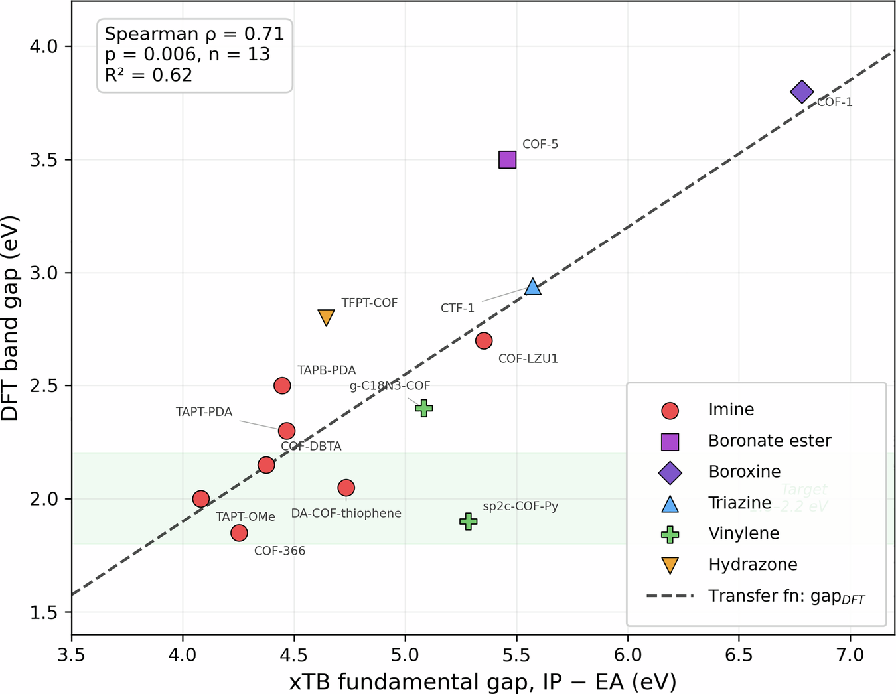
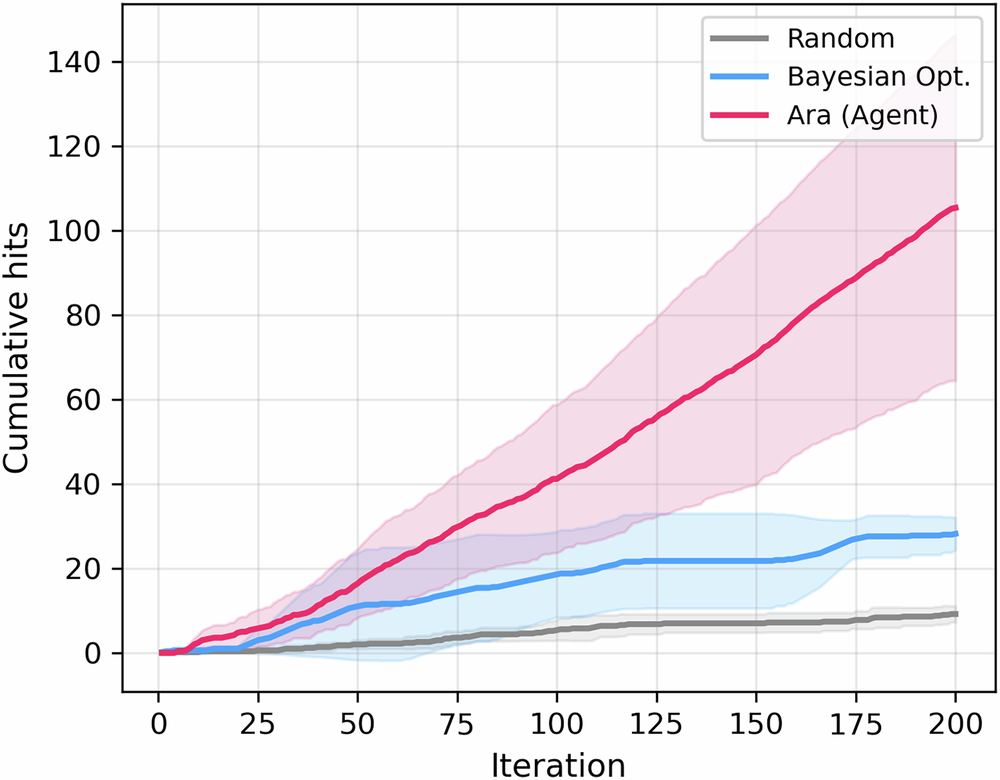
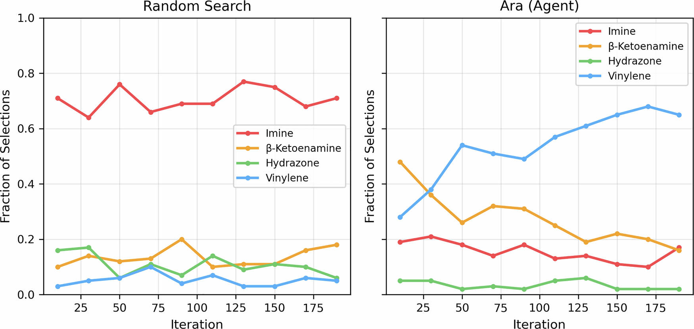
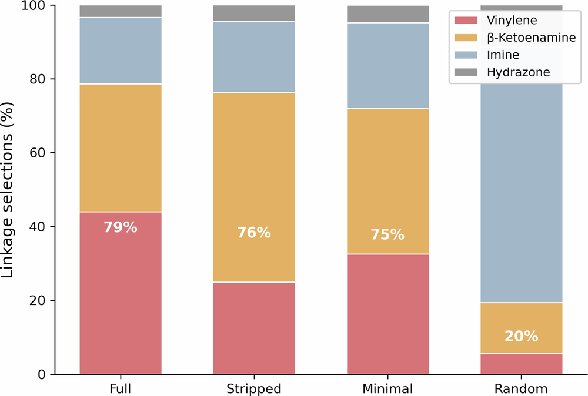

论文资料
Escaping the hydrolysis trap: a react agent for inverse design of durable photocatalytic covalent organic frameworks
已取得公开摘要，图文解读尚未完成
已取得公开摘要，图文解读尚未完成。取得完整资料并通过核验后，这个地址会更新为图文解读。
公开摘要
Covalent organic frameworks (COFs) are promising photocatalysts for solar hydrogen production, yet the most electronically favorable linkages, imines,hydrolyze rapidly in water, creating a stability-activity trade-off that limits practical deployment. Navigating the combinatorial design space of nodes, linkers, linkages, and functional groups to identify candidates that are simultaneously active and durable remains a formidable challenge. Here we introduce Ara , a large-language-model (LLM) agent that leverages pretrained chemical knowledge, donor-acceptor theory, conjugation effects, and linkage stability hierarchies, to guide the search for photocatalytic COFs satisfying joint band-gap, band-edge, and hydrolytic-stability criteria. Evaluated against random search and Bayesian optimization (BO) over a space consisting of candidates with various nodes, linkers, linkages, and r-groups, screened with a GFN1-xTB fragment pipeline, Ara achieves a 52.7% hit rate (11.5 × random, p = 0.006), finds its first hit at iteration 12 versus 25 for random search, and significantly outperforms BO ( p = 0.006). Inspection of the agent’s reasoning traces reveal interpretable chemical logic: early convergence on vinylene and β -ketoenamine linkages for stability, node selection informed by electron-withdrawing character, and systematic R-group optimization to center the band gap at 2.0 eV. Exhaustive evaluation of the full search space uncovers a complementary exploitation-exploration trade-off between the agent and BO, suggesting that hybrid strategies may combine the strengths of both approaches. These results demonstrate that LLM chemical priors can substantially accelerate multi-criteria materials discovery.
原图未改动。以下图注来自标注的来源，不据此补写摘要未报告的实验结论。
已取得的论文原图

原文图注与出处
a The combinatorial design space comprises 820 candidates formed from 7 trigonal nodes, 19 ditopic linkers, 4 linkage chemistries of varying hydrolytic stability, and 10 aromatic R-group substituents, subject to chemical compatibility constraints. b Each candidate is evaluated through a fragment-based screening pipeline: a node--linker--node repeat unit is assembled via RDKit, embedded in 3D, optimized with GFN1-xTB, and scored for band gap (IP − EA, mapped to the DFT scale via a calibrated transfer function), conduction-band minimum (CBM), and composite stability index (S CSI ). A candidate is classified as a hit if it satisfies all three criteria simultaneously. c Three search strategies are compared: random sampling, Bayesian optimization with a Gaussian process surrogate on Morgan fingerprints, and the Ara LLM agent, which iteratively proposes candidates with explicit chemical reasoning, receives quantitative feedback, and refines its selections over 200 iterations.
Peivaste, Iman et al.
原文图页 · CC BY 4.0

原文图注与出处
The calibration set includes boronate ester, boroxine, and triazine linkage types not present in the search space to broaden the range of the transfer function. Note that CTF-1 employs triazine ring formation as the linkage chemistry, distinct from triazine-containing nodes (e.g., TFPT-ald, TAPT) that connect via imine or other bond types.
Peivaste, Iman et al.
原文图页 · CC BY 4.0

原文图注与出处
Shaded regions indicate mean ± s.d. across five random seeds (200 iterations per run). A hit is defined as a candidate satisfying 1.8–2.2 eV band gap, CBM < 0 V, and S CSI ≥ 0.7. The agent outperforms both random search and BO in cumulative hits and discovers its first hit sooner.
Peivaste, Iman et al.
原文图页 · CC BY 4.0

原文图注与出处
Fraction of candidate selections belonging to each linkage type (imine, β -ketoenamine, hydrazone, vinylene) in a rolling window of 20 iterations, averaged over five seeds. Left: random search maintains a roughly uniform distribution across linkage types throughout the run. Right: Ara (agent) shifts from a mixed distribution early in the search to a strong preference for vinylene and, to a lesser extent, β -ketoenamine by iteration 50, reflecting chemistry-aware prioritization of hydrolytically stable linkages (high S CSI ) while exploring node and R-group choices to meet the band-gap and band-edge criteria.
Peivaste, Iman et al.
原文图页 · CC BY 4.0已取得的论文原图


原文图注与出处
Llinkage-type selection distribution for the Full (published system prompt), Stripped (chemistry descriptions removed), Minimal (task instructions only), and Random conditions. Percentages indicate the combined fraction of hydrolytically stable linkages (vinylene + β -ketoenamine). All three agent conditions allocate 75–79% of selections to stable linkages versus 19% for random search ( χ 2 > 400, p < 10 −90 ), despite the Stripped and Minimal prompts containing no stability-related vocabulary.
Peivaste, Iman et al.
原文图页 · CC BY 4.0